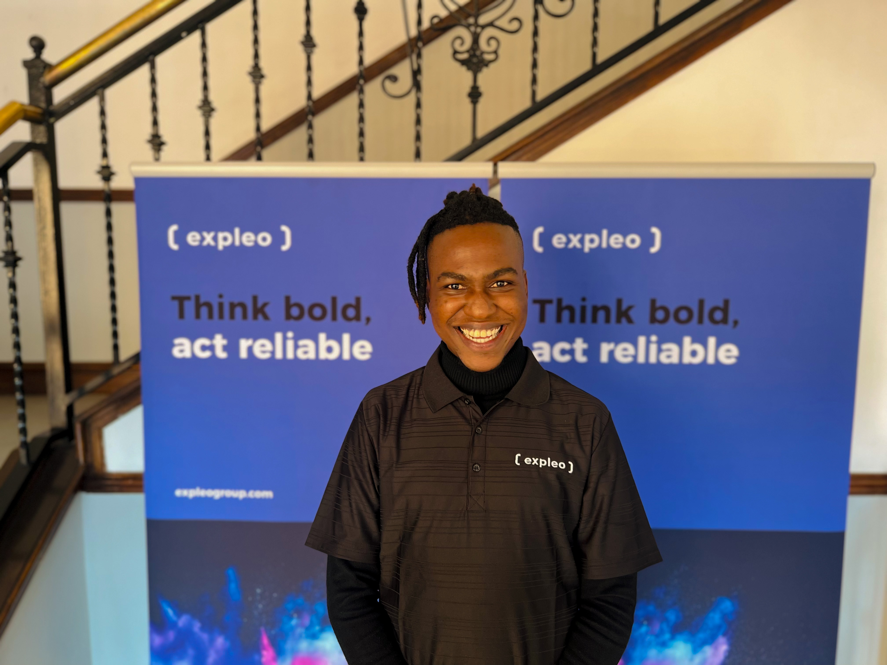
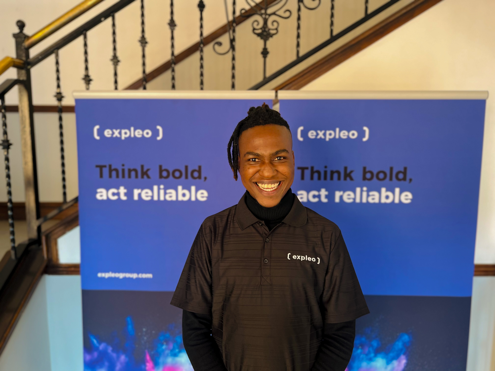
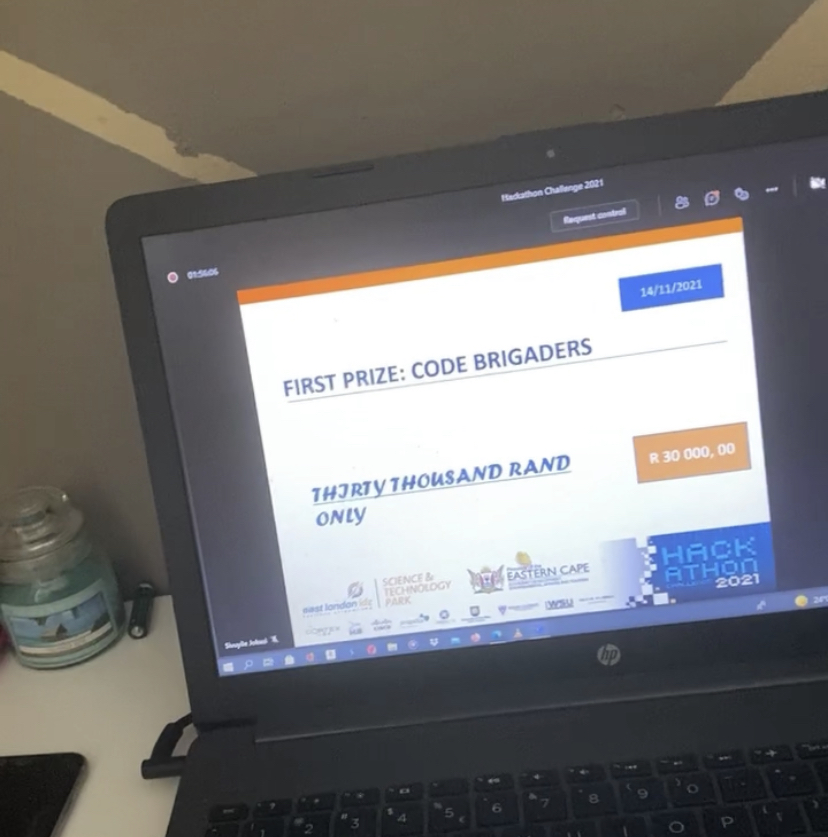
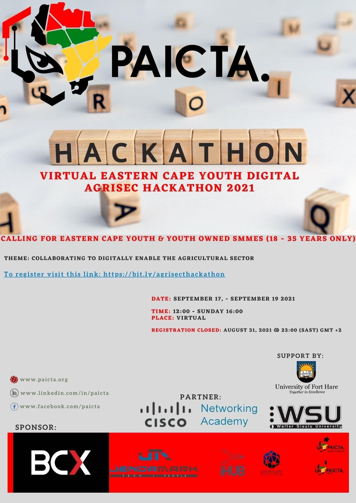

I am a self-motivated individual with extensive knowledge in programming languages such as Java, C#, Python, MySQL, and VB.net. My skills in Software and Application Development, as well as Web Development, are strong. I have a solid understanding of software development principles and have demonstrated my ability to adapt to changes and work independently. I consistently exceed expectations in delivering high-quality applications. Furthermore, I completed a Diploma in Information and Communication Technology, specializing in Application Development, and consistently strive to enhance my skills and stay up-to-date with the latest industry trends.

I also have experience as a Software Quality Engineer, specializing in Software Testing, Test Automation, and Agile methodologies. I am proficient in using tools such as Java Selenium, Rest Assured, JMeter, and Robot Framework. As a Software Quality Engineer, I have a strong grasp of designing effective test cases, executing scripts, and identifying defects. I work closely with development teams to ensure the delivery of reliable and high-quality software. My attention to detail and adaptability in dynamic testing environments have enabled me to consistently surpass expectations.
 

I am fortunate to be a part of Expleo Group, where I serve as a Software Quality Engineer Intern. From the very beginning, I was thrilled to join this innovative and dynamic organization!
I was warmly welcomed by my colleagues, who impressed me with their passion and knowledge.
Expleo's collaborative and innovative culture sets it apart, and I am excited to contribute to the company's mission of transforming technology and digital solutions.
It was an honor to complete the Samsung Innovation Campus Course and receive a Certificate recognizing me as a Software Developer and Data Analyst using the Python Programming Language. This achievement has been one of the most significant milestones in my academic journey, and I am grateful for the support provided by Walter Sisulu University and Samsung South Africa.
I was selected as a beneficiary of the Samsung Innovation Campus (SIC) program at Walter Sisulu University. This program offers young people the opportunity to enhance their employment prospects and gain practical education in technology.

I participated in the Power To Act Hackathon hosted by Rovinia Trial and Geekulcha. The challenge was to utilize our information technology skills to develop a solution that promotes democracy and shapes South Africa's future.

During the hackathon, I had the opportunity to brainstorm solutions with other talented tech minds, collaborate, and share innovative ideas.

I participated in the Hackathon Challenge hosted by the East London Industrial Developmental Zone Science and Technology Park. The challenge was to find innovative solutions to address social issues in the Eastern Cape.
Our team developed an E-Medical help solution to improve access to healthcare services in rural Eastern Cape. We were awarded first place in the hackathon and received a prize of R30,000, along with a 12-month incubation program with ELIDZ.
17th – 19th September, 2021

I took part in the PAICTA Hackathon where our team secured the second position. The challenge was to develop an innovative solution to assist the AgriScience sector in the Eastern Cape. We created a website that enables farmers to apply technological farming methods using IoT and AI.